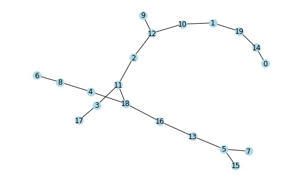

Algorithms - I
Distance, Centrality, Community and Traversal
import matplotlib.pyplot as plt import networkx as nx import seaborn as sns sns.set() %matplotlib inline
import warnings import matplotlib.cbook warnings.filterwarnings("ignore",category=matplotlib.cbook.mplDeprecation)
G = nx.karate_club_graph() nx.draw(G)

1. Distance
Graph diameter, radius, eccentricity and other properties.
center(G[, e, usebounds])Returns the center of the graph G.diameter(G[, e, usebounds])Returns the diameter of the graph G.eccentricity(G[, v, sp])Returns the eccentricity of nodes in G.extrema_bounding(G[, compute])Compute requested extreme distance metric of undirected graph Gperiphery(G[, e, usebounds])Returns the periphery of the graph G.radius(G[, e, usebounds])Returns the radius of the graph G.
nx.radius(G), nx.diameter(G)
(3, 5)
nx.center(G)
[0, 1, 2, 3, 8, 13, 19, 31]
nx.eccentricity(G)
{0: 3,
1: 3,
2: 3,
3: 3,
4: 4,
5: 4,
6: 4,
7: 4,
8: 3,
9: 4,
10: 4,
11: 4,
12: 4,
13: 3,
14: 5,
15: 5,
16: 5,
17: 4,
18: 5,
19: 3,
20: 5,
21: 4,
22: 5,
23: 5,
24: 4,
25: 4,
26: 5,
27: 4,
28: 4,
29: 5,
30: 4,
31: 3,
32: 4,
33: 4}
nx.extrema_bounding(G)
5
nx.periphery(G)
[14, 15, 16, 18, 20, 22, 23, 26, 29]
Centrality
Degree
degree_centrality(G)Compute the degree centrality for nodes.in_degree_centrality(G)Compute the in-degree centrality for nodes.out_degree_centrality(G)Compute the out-degree centrality for nodes.
G = nx.balanced_tree(r=3, h=2) nx.draw(G, node_size = 500,node_color = 'lightblue', with_labels =True)

nx.degree_centrality(G)
{0: 0.25,
1: 0.3333333333333333,
2: 0.3333333333333333,
3: 0.3333333333333333,
4: 0.08333333333333333,
5: 0.08333333333333333,
6: 0.08333333333333333,
7: 0.08333333333333333,
8: 0.08333333333333333,
9: 0.08333333333333333,
10: 0.08333333333333333,
11: 0.08333333333333333,
12: 0.08333333333333333}
nx.in_degree_centrality(nx.to_directed(G))
{0: 0.25,
1: 0.3333333333333333,
2: 0.3333333333333333,
3: 0.3333333333333333,
4: 0.08333333333333333,
5: 0.08333333333333333,
6: 0.08333333333333333,
7: 0.08333333333333333,
8: 0.08333333333333333,
9: 0.08333333333333333,
10: 0.08333333333333333,
11: 0.08333333333333333,
12: 0.08333333333333333}
nx.out_degree_centrality(nx.to_directed(G))
{0: 0.25,
1: 0.3333333333333333,
2: 0.3333333333333333,
3: 0.3333333333333333,
4: 0.08333333333333333,
5: 0.08333333333333333,
6: 0.08333333333333333,
7: 0.08333333333333333,
8: 0.08333333333333333,
9: 0.08333333333333333,
10: 0.08333333333333333,
11: 0.08333333333333333,
12: 0.08333333333333333}
Eigenvector Centality
eigenvector_centrality(G[, max_iter, tol, …])Compute the eigenvector centrality for the graph G.eigenvector_centrality_numpy(G[, weight, …])Compute the eigenvector centrality for the graph G.katz_centrality(G[, alpha, beta, max_iter, …])Compute the Katz centrality for the nodes of the graph G.katz_centrality_numpy(G[, alpha, beta, …])Compute the Katz centrality for the graph G.
nx.eigenvector_centrality(G)
{0: 0.49999972705204543,
1: 0.40824851115143324,
2: 0.40824851115143324,
3: 0.40824851115143324,
4: 0.16666657745857444,
5: 0.16666657745857444,
6: 0.16666657745857444,
7: 0.16666657745857444,
8: 0.16666657745857444,
9: 0.16666657745857444,
10: 0.16666657745857444,
11: 0.16666657745857444,
12: 0.16666657745857444}
nx.katz_centrality(G)
{0: 0.31855094383728,
1: 0.3279200842087277,
2: 0.3279200842087277,
3: 0.3279200842087277,
4: 0.2529669612371458,
5: 0.2529669612371458,
6: 0.2529669612371458,
7: 0.2529669612371458,
8: 0.2529669612371458,
9: 0.2529669612371458,
10: 0.2529669612371458,
11: 0.2529669612371458,
12: 0.2529669612371458}
Betweenness Centrality
betweenness_centrality(G[, k, normalized, …])Compute the shortest-path betweenness centrality for nodes.edge_betweenness_centrality(G[, k, …])Compute betweenness centrality for edges.betweenness_centrality_subset(G, sources, …)Compute betweenness centrality for a subset of nodes.edge_betweenness_centrality_subset(G, …[, …])Compute betweenness centrality for edges for a subset of nodes.
nx.betweenness_centrality(G)
{0: 0.7272727272727273,
1: 0.4545454545454546,
2: 0.4545454545454546,
3: 0.4545454545454546,
4: 0.0,
5: 0.0,
6: 0.0,
7: 0.0,
8: 0.0,
9: 0.0,
10: 0.0,
11: 0.0,
12: 0.0}
2. Community
Functions for computing and measuring community structure.
The functions in this class are not imported into the top-level networkx namespace. You can access these functions by importing the networkx.algorithms.community module, then accessing the functions as attributes of community. For example:
from networkx.algorithms import community G = nx.barbell_graph(5, 1) nx.draw(G)
communities_generator = community.girvan_newman(G) top_level_communities = next(communities_generator) next_level_communities = next(communities_generator) sorted(map(sorted, next_level_communities))
[[0, 1, 2, 3, 4], [5], [6, 7, 8, 9, 10]]
K-Clique Communty
G = nx.relaxed_caveman_graph(5,10,0.1) nx.draw(G, node_size = 40,node_color = 'blue')

from networkx.algorithms.community import k_clique_communities c = list(k_clique_communities(G,k=4)) print(c)
[frozenset({0, 1, 2, 3, 4, 5, 6, 7, 8, 9}), frozenset({10, 11, 12, 13, 14, 15, 16, 17, 18, 19}), frozenset({20, 21, 22, 23, 24, 25, 26, 27, 28, 29}), frozenset({32, 33, 34, 35, 36, 37, 38, 39, 30, 31}), frozenset({40, 41, 42, 43, 44, 45, 46, 47, 48, 49})]
from networkx.algorithms.community import greedy_modularity_communities c = list(greedy_modularity_communities(G)) print(c)
[frozenset({0, 1, 2, 3, 4, 5, 6, 7, 8, 9}), frozenset({10, 11, 12, 13, 14, 15, 16, 17, 18, 19}), frozenset({20, 21, 22, 23, 24, 25, 26, 27, 28, 29}), frozenset({32, 33, 34, 35, 36, 37, 38, 39, 30, 31}), frozenset({40, 41, 42, 43, 44, 45, 46, 47, 48, 49})]
from networkx.algorithms.community import asyn_lpa_communities c = list(asyn_lpa_communities(G)) print(c)
[{0, 1, 2, 3, 4, 5, 6, 7, 8, 9}, {10, 11, 12, 13, 14, 15, 16, 17, 18, 19}, {20, 21, 22, 23, 24, 25, 26, 27, 28, 29}, {32, 33, 34, 35, 36, 37, 38, 39, 30, 31}, {40, 41, 42, 43, 44, 45, 46, 47, 48, 49}]
from networkx.algorithms.community import label_propagation_communities c = list(label_propagation_communities(G)) print(c)
[{10, 11, 12, 13, 14, 15, 16, 17, 18, 19}, {32, 33, 34, 35, 36, 37, 38, 39, 30, 31}, {0, 1, 2, 3, 4, 5, 6, 7, 8, 9}, {40, 41, 42, 43, 44, 45, 46, 47, 48, 49}, {20, 21, 22, 23, 24, 25, 26, 27, 28, 29}]
from networkx.algorithms.community import asyn_fluidc c = list(asyn_fluidc(G,k=5)) print(c)
[{16, 17, 19, 11}, {10, 12, 13, 14, 15, 18}, {32, 33, 34, 35, 36, 37, 38, 39, 30, 31}, {0, 1, 2, 3, 4, 5, 6, 7, 40, 9, 8, 43, 44, 45, 46, 47, 48, 49, 41, 42}, {20, 21, 22, 23, 24, 25, 26, 27, 28, 29}]
3 Traversal
3.1 Depth First Search
Basic algorithms for depth-first searching the nodes of a graph.
dfs_edges(G[, source, depth_limit])Iterate over edges in a depth-first-search (DFS).dfs_tree(G[, source, depth_limit])Returns oriented tree constructed from a depth-first-search from source.dfs_predecessors(G[, source, depth_limit])Returns dictionary of predecessors in depth-first-search from source.dfs_successors(G[, source, depth_limit])Returns dictionary of successors in depth-first-search from source.dfs_preorder_nodes(G[, source, depth_limit])Generate nodes in a depth-first-search pre-ordering starting at source.dfs_postorder_nodes(G[, source, depth_limit])Generate nodes in a depth-first-search post-ordering starting at source.dfs_labeled_edges(G[, source, depth_limit])Iterate over edges in a depth-first-search (DFS) labeled by type.
G = nx.random_tree(20) nx.draw(G, node_size = 200,node_color = 'lightblue',with_labels=True)

L = list(nx.dfs_edges(G, source=0, depth_limit=5)) print(L)
[(0, 14), (14, 19), (19, 1), (1, 10), (10, 12)]
TG = nx.dfs_tree(G) nx.draw(G, node_size = 200,node_color = 'lightblue',with_labels=True)

nx.dfs_predecessors(G, source=0)
{1: 19,
2: 12,
3: 11,
4: 18,
5: 13,
6: 8,
7: 5,
8: 4,
9: 12,
10: 1,
11: 2,
12: 10,
13: 16,
14: 0,
15: 5,
16: 18,
17: 3,
18: 11,
19: 14}
nx.dfs_successors(G, source=0)
{0: [14],
1: [10],
2: [11],
3: [17],
4: [8],
5: [7, 15],
8: [6],
10: [12],
11: [3, 18],
12: [9, 2],
13: [5],
14: [19],
16: [13],
18: [4, 16],
19: [1]}
list(nx.dfs_preorder_nodes(G))
[0, 14, 19, 1, 10, 12, 9, 2, 11, 3, 17, 18, 4, 8, 6, 16, 13, 5, 7, 15]
list(nx.dfs_postorder_nodes(G))
[9, 17, 3, 6, 8, 4, 7, 15, 5, 13, 16, 18, 11, 2, 12, 10, 1, 19, 14, 0]
list(nx.dfs_labeled_edges(G))
[(0, 0, 'forward'), (0, 14, 'forward'), (14, 0, 'nontree'), (14, 19, 'forward'), (19, 14, 'nontree'), (19, 1, 'forward'), (1, 10, 'forward'), (10, 12, 'forward'), (12, 9, 'forward'), (9, 12, 'nontree'), (12, 9, 'reverse'), (12, 2, 'forward'), (2, 11, 'forward'), (11, 3, 'forward'), (3, 17, 'forward'), (17, 3, 'nontree'), (3, 17, 'reverse'), (3, 11, 'nontree'), (11, 3, 'reverse'), (11, 18, 'forward'), (18, 4, 'forward'), (4, 8, 'forward'), (8, 6, 'forward'), (6, 8, 'nontree'), (8, 6, 'reverse'), (8, 4, 'nontree'), (4, 8, 'reverse'), (4, 18, 'nontree'), (18, 4, 'reverse'), (18, 16, 'forward'), (16, 13, 'forward'), (13, 5, 'forward'), (5, 7, 'forward'), (7, 5, 'nontree'), (5, 7, 'reverse'), (5, 15, 'forward'), (15, 5, 'nontree'), (5, 15, 'reverse'), (5, 13, 'nontree'), (13, 5, 'reverse'), (13, 16, 'nontree'), (16, 13, 'reverse'), (16, 18, 'nontree'), (18, 16, 'reverse'), (18, 11, 'nontree'), (11, 18, 'reverse'), (11, 2, 'nontree'), (2, 11, 'reverse'), (2, 12, 'nontree'), (12, 2, 'reverse'), (12, 10, 'nontree'), (10, 12, 'reverse'), (10, 1, 'nontree'), (1, 10, 'reverse'), (1, 19, 'nontree'), (19, 1, 'reverse'), (14, 19, 'reverse'), (0, 14, 'reverse'), (0, 0, 'reverse')]
3.2 Breadth-first search
Basic algorithms for breadth-first searching the nodes of a graph.
bfs_edges(G, source[, reverse, depth_limit])Iterate over edges in a breadth-first-search starting at source.bfs_tree(G, source[, reverse, depth_limit])Returns an oriented tree constructed from of a breadth-first-search starting at source.bfs_predecessors(G, source[, depth_limit])Returns an iterator of predecessors in breadth-first-search from source.bfs_successors(G, source[, depth_limit])Returns an iterator of successors in breadth-first-search from so
print(list(nx.bfs_edges(G,0)))
[(0, 14), (14, 19), (19, 1), (1, 10), (10, 12), (12, 9), (12, 2), (2, 11), (11, 3), (11, 18), (3, 17), (18, 4), (18, 16), (4, 8), (16, 13), (8, 6), (13, 5), (5, 7), (5, 15)]
nx.draw(nx.bfs_tree(G,0), node_color = 'lightblue', node_size = 200, with_labels = True)

print(list(nx.bfs_predecessors(G,0)))
[(14, 0), (19, 14), (1, 19), (10, 1), (12, 10), (9, 12), (2, 12), (11, 2), (3, 11), (18, 11), (17, 3), (4, 18), (16, 18), (8, 4), (13, 16), (6, 8), (5, 13), (7, 5), (15, 5)]
print(list(nx.bfs_successors(G,0)))
[(0, [14]), (14, [19]), (19, [1]), (1, [10]), (10, [12]), (12, [9, 2]), (2, [11]), (11, [3, 18]), (3, [17]), (18, [4, 16]), (4, [8]), (16, [13]), (8, [6]), (13, [5]), (5, [7, 15])]